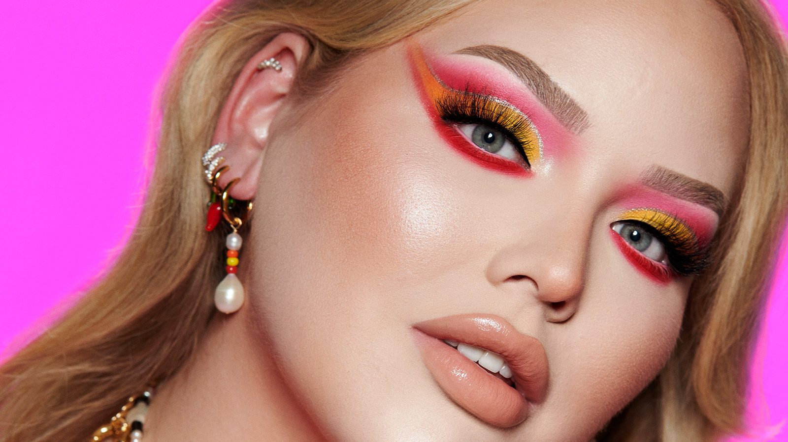
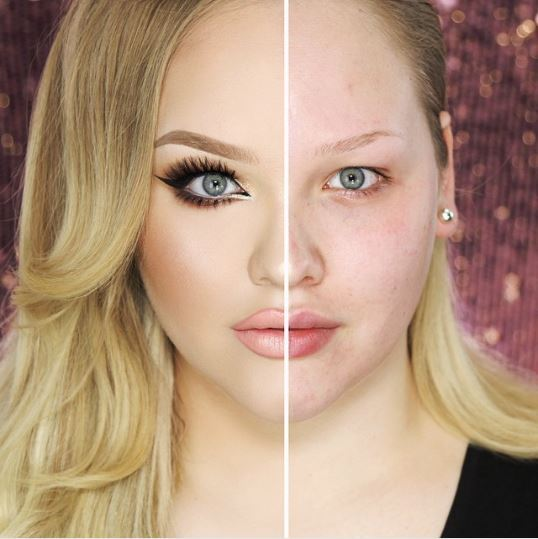

Nikkie de Jager, better known by her YouTube channel name NikkieTutorials, is a Dutch makeup artist and beauty vlogger. She gained online popularity in 2015 after her YouTube video "The Power of Makeup" became popular and inspired many other videos of people showing their faces with and without makeup. She now has more than 12.4 million subscribers and is the first global artistry adviser for Marc Jacobs.
YouTube Originals announced "NikkieTutorials: Layers of Me," a brand-new documentary series giving fans a peek behind the curtain of Nikkie de Jager's private life. The four-part docuseries was filmed over the last 2.5 years, following Nikkie through the biggest moments of her off-camera career and opening up about the challenges of navigating fame. From talking about the cruel bullying she endured as a child, to experiencing the painful loss of her brother to cancer and learning how to acknowledge her emotions, in this exclusive, intimate series Nikkie shares a behind-the-scenes look at her life with her ever growing audience, culminating with the artist's very public coming out as a transwoman and the events that followed. Beyond the trials and tribulations, the series gives a peek into Nikkie's love life with fiancé, Dylan, along with pivotal moments in her career, such as becoming appointed as Global Artistry Adviser for Marc Jacobs Beauty and collaborating with well-known celebrities.